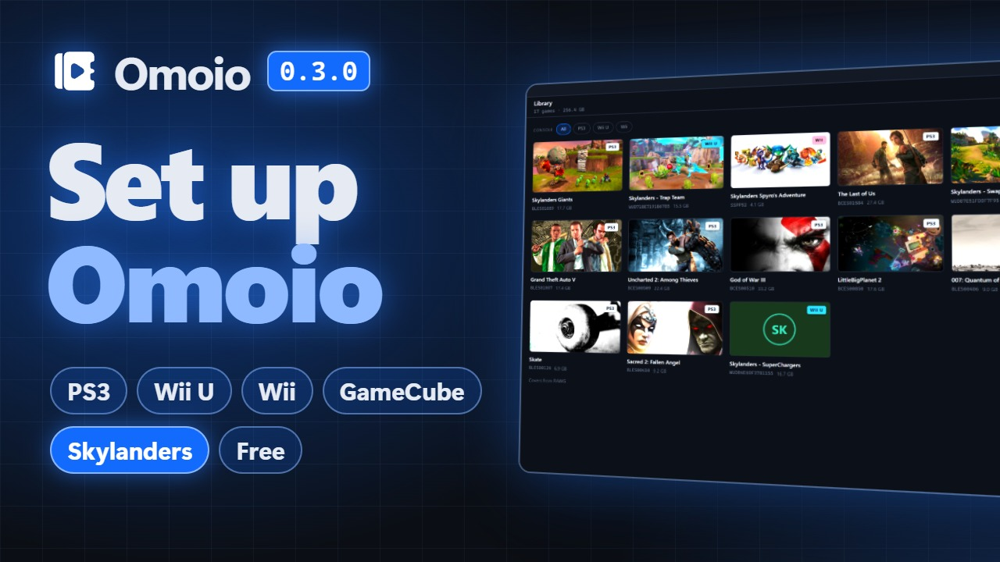

Omoio
Your PS3 and Wii U games in one library. Press Play and Omoio sets up the emulator for you.
Download for WindowsThe installer isn't signed yet, so Windows may warn you. Click More info, then Run anyway.
Omoio runs on Windows only, so download it on a Windows PC.

The video plays from YouTube when you press it. Covers in it come from RAWG.
From download to Play
-
Install Omoio
Run the installer. It doesn't need admin rights.
-
Choose your emulators
Omoio installs RPCS3 for PS3 games and Cemu for Wii U games. For PS3 it opens Sony's firmware page, and you pick the file you downloaded there.
-
Import your games
Add folders, zip or 7z files of games you own, then press Play.
Setup guide
Every step on screen, from the download to your first game, with chapters so you can skip to the one you need.

The guide plays from YouTube when you press it.
What you get
One library
Import a folder, a zip or 7z file, or scan a whole drive. PS3 and Wii U games sit side by side, and each starts in its own emulator.
Emulators installed and updated
Omoio installs the official builds of RPCS3 and Cemu. RPCS3 is kept up to date, and Cemu is updated to the newest version Omoio has tested, so your controllers keep working. Patches and graphic packs from their communities download from the same place.
Controllers and Big Picture
Set one layout for up to four players. Big Picture is the library for a TV and a controller, and View and Menu together take you between it and a running game.
Saves and updates for PS3
Back up PS3 saves and install official game updates. Save backups are for PS3 games only for now.
Skylanders without the portal
In Skylanders Giants on PS3, and in SWAP Force, Trap Team and SuperChargers on Wii U, press your controller's home button and a portal menu opens over the game. Pick any figure, trap or vehicle and it goes on the portal. In Trap Team it also shows which villains you've caught and which trap holds each. In SuperChargers a garage keeps the vehicles by land, sea and sky, and one press puts a SuperCharger on with its own vehicle.
Questions
Is Omoio an emulator?
No. Omoio is the library and launcher around the emulators. It installs RPCS3 for PS3 games and Cemu for Wii U games and starts them for you, and they do the emulation. RPCS3 is kept up to date, and Cemu is updated to the newest version Omoio has tested.
Does Omoio come with games?
No. Omoio plays dumps of games you own. It doesn't include games, download them or help you find them.
Is it free?
Yes. Omoio is free and open source under the MIT licence, and so are the emulators it installs.
What does it run on?
64-bit Windows. PS3 games run through RPCS3 and Wii U games through Cemu, and more systems are planned. How well a game runs depends on the emulator and your PC.
Can I use my controller?
Xbox controllers and other XInput pads work in both emulators. Other pads work in RPCS3 through SDL. In Cemu, PS5 and PS4 controllers and the Switch Pro Controller work too, as does an 8BitDo pad in its Switch or XInput mode. You set one layout, for up to four players.
What do Wii U games need?
Unpacked game folders and .wua files (Cemu's own archive) work as they are. Disc images (.wud and .wux) need your own keys file, added on the Emulators screen. Downloads in NUS form aren't supported.
Which Skylanders games work?
Skylanders Giants, the PS3 version, and Skylanders SWAP Force, Trap Team and SuperChargers, the Wii U versions. Each one gets a portal menu that puts figures, traps and vehicles on from your controller, so you don't need a real portal. The figures' pictures come from your own copy of the game. The other Skylanders games aren't supported yet.
Why does Windows warn me about the installer?
The installer isn't code signed yet, because a certificate costs money every year. Click More info, then Run anyway. Download it only from this page or from the releases on GitHub.
Something broke. Where do I tell you?
Open an issue on GitHub, or email hello@omoio.app, with the game, what happened and your Omoio version. The Logs screen keeps a log of every play session. Look it over for personal details before you share it.